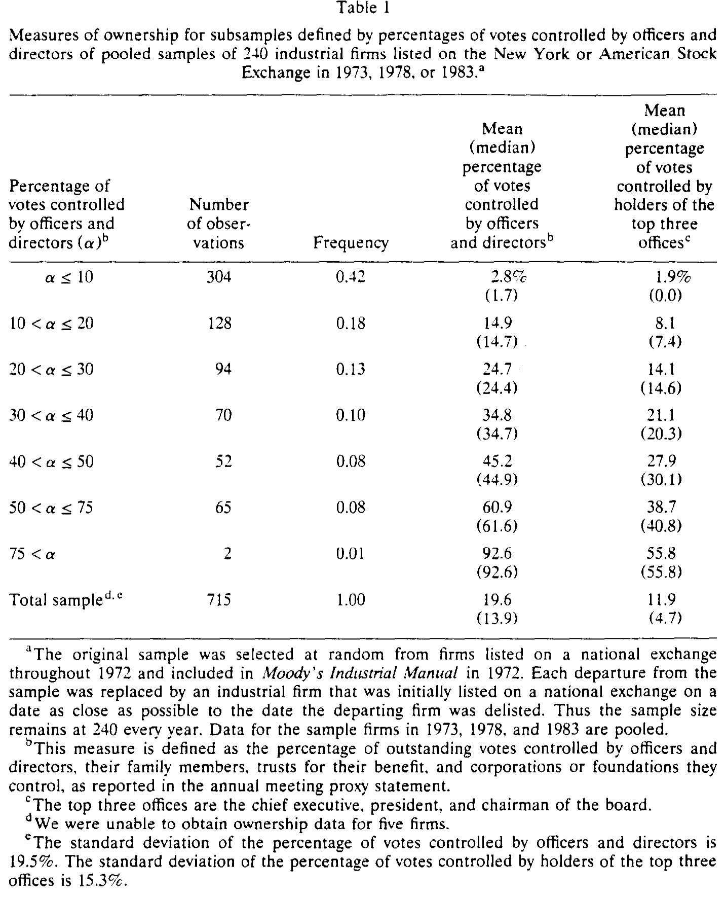
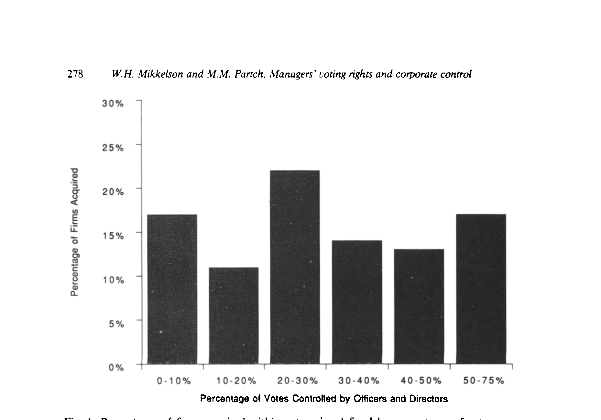
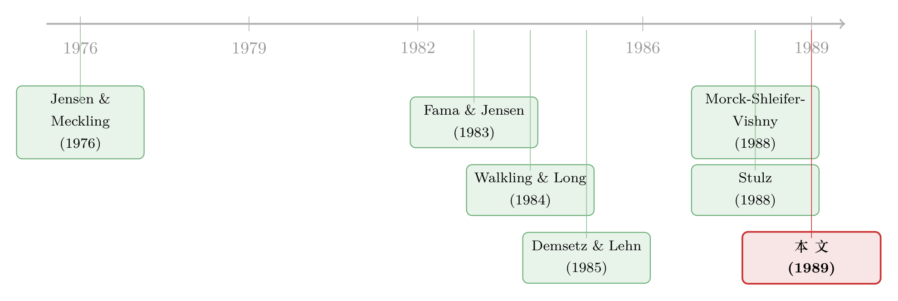

老板手里那点选票，到底拦不拦得住门口的野蛮人？
本文读的是 Mikkelson & Partch (1989, Journal of Financial Economics)：在一个无选择偏误的随机样本里，作者发现「管理层控制的投票权」与「公司最终是否易主」几乎毫无关系——无论老板手里攥着不到 10% 还是超过 50% 的票，公司在随后四年里发生控制权变更的概率都只在 0.16～0.17 之间晃动。但这个「平得反常」的零结果，恰恰是两股方向相反的力互相抵消的结果：老板握的票越多，越少有人来敲门，可一旦真有人敲门，这扇门反而越容易被推开。
1 一个「平」得让人起疑的关系
先讲一个几乎是常识的直觉。
公司的普通股，把两样东西捆在了一起：对盈余和资产的剩余索取权，以及在董事选举和重大事项上的投票权。Fama and Jensen (1983) 和 Easterbrook and Fischel (1983) 都强调过，正是这种「捆绑」，把管理层的投票控制权和他们在公司里的经济利益绑到了一起。顺着这个直觉往下推，结论似乎呼之欲出：老板手里的票越多，他越能挡住不请自来的收购，公司也就越不容易被别人拿走。Jensen and Meckling (1976) 的代理成本框架、Stulz (1988) 关于「投票权不足就无力阻击收购」的论证，指向的都是同一个方向——管理层投票控制权与控制权变更，应当负相关。
可这篇论文一上来就把这个直觉按在地上。
作者在一个跨度十五年的随机样本里，估计了不同持股水平下公司「在随后四年里被收购、易主」的概率。结果是：从老板控制不到 10% 的投票权，一直到控制超过 50%，这个概率始终只在 0.16 到 0.17 之间挪动。换句话说，几乎是一条水平线。一个被理论反复预言为「显著负相关」的关系，在数据里却平得像没发生过。
这就是全文的张力所在：一个干净的零结果。而一篇好论文的本事，恰恰是不满足于「没关系」三个字，而要追问——这条平线底下，到底藏着什么？
2 真正关键的一步：把一股力拆成两股
接着，一个自然的问题是：为什么会平？
朴素的回答是「投票权根本不重要」。但作者给出的回答要精彩得多。他们指出，「管理层能不能挡住收购」固然随持股比例上升，可有一件事被那些只盯着「阻击能力」的理论忽略了——老板从一笔收购里能拿到的回报，同样随持股比例上升。当管理层控制了大量选票，他们个人能从被收购中兑现的财富也水涨船高。
于是两股力开始角力：
- 威慑效应：老板票越多，外部收购者越难得手，于是越少有人发起收购。这一点与既有理论一致。
- 议价/退出效应：可一旦真有人发起收购，老板票越多，他越有动力点头卖出（毕竟自己也分得多）；而且 Walkling and Long (1984) 与 Morck, Shleifer and Vishny (1988a) 的证据都表明，持股高的管理层反而更少抵抗要约。Broadman (1989) 更直接地发现，一笔初始要约能否成功，与目标公司管理层的回报正相关。
把这两股力叠加起来，你就明白那条「平线」是怎么来的了：老板票越多，敲门的人越少（提案概率下降），但敲门之后门越容易被推开（成功概率上升）。一减一加，最终落到「公司是否易主」这个总量上，两者几乎完美抵消。
这才是本文真正的贡献——它没有停在「无关」，而是把一个看似单一的关系，拆成了一对方向相反的子关系，并用数据一一验证。
这里有一个方法论上的小启示：当一个你以为「应该显著」的关系在数据里显示为零，先别急着下「不重要」的结论。它可能是两条真实存在、却互相抵消的渠道叠加的结果。把总量拆成阶段，零结果往往会重新开口说话。
3 识别策略：把「控制权」拆成三段来看
那么，怎么把这两股力从数据里分离出来？
作者的做法是把「控制权事件」拆成三个互相衔接的环节，分别建模：
- 垫脚石投资 (toehold investment)：外部者先悄悄买入一小块股权。
- 收购要约 (takeover offer / takeover attempt)：是否有人正式发起收购。
- 控制权变更 (change in control)：要约最终是否导致公司易主。
核心的总量分析用的是多项 Logit 回归 (multinomial logit regression)，模型框架来自 Theil (1969)。被解释变量是公司在测度持股之后四年内落入的四种结局之一：被另一方收购完成、完成私有化交易、破产或清算、以及仍在公开交易。回归里「仍在公开交易」被设为默认（缺省）结局，因此估计出的系数要理解为——某个自变量对「易主概率与仍在交易概率之比」取对数后的影响。
关键的解释变量是 \(\alpha\)：由公司高管和董事作为一个整体所控制的、占流通股的投票权比例。这个 \(\alpha\) 不只是直接持股，还把高管/董事的家庭成员、为其家庭受益的信托、以及由其家庭控制的公司和基金会所持的票都算了进来——衡量的是「与某位高管或董事相关联的全部投票证券所对应的票数」。
更难得的是，作者并没有让 \(\alpha\) 单打独斗。他们同时控制了四个会影响管理层「实际」投票权的因素：
- 公司总价值 (firm value)：股票市值 + 优先股账面值 + 长期债务与流动负债账面值，全部换算成 1983 年美元；它对应着「老板手里有多少资源来抵御收购」，也对应着收购方拿下这家公司的成本。
- 财务杠杆 (leverage)：总债务账面值 ÷（总债务账面值 + 优先股账面值 + 股权市值）。杠杆变动（如回购、债换股）会在不改变公司总价值的前提下抬高老板的相对投票权。
- 董事交错选举 (staggered voting for directors)：通过抬高外部者拿到董事会多数席位的成本来加固管理层控制。
- 大宗持股人 (blockholders)：分三类——在董事会无代表的「非关联大股东 (unaffiliated blockholders)」、在董事会有代表的「关联大股东 (affiliated blockholders)」、以及金融机构/基金会/遗产/员工持股计划。第二、三类被认为利益更可能与管理层一致。
4 数据：贵在「没有选择偏误」
数据这一节看似平淡，却是本文真正的底气所在。
初始样本是 240 家工业企业，从一个明确定义的总体里随机抽取：(1) 在 1972 年全年都出现在 CRSP 日收益文件中（即在纽约或美国证券交易所上市，当年共 2,556 家）；(2) 1972 年被收入 Moody's Industrial Manual（这就排除了银行、保险等金融公司以及公用事业和运输企业）。样本一直追踪到 1987 年，期间一旦有公司因被收购、私有化或破产清算而退出，就用「上市日期最接近退出公司退市日」的工业企业补上——这样样本规模始终维持在 240 家，且年龄分布始终代表 CRSP 工业企业总体。
作者在 1973、1978、1983 三个年份各查阅了每家公司的股东大会委托书 (proxy statement)，汇总出 715 个观测（有 5 家公司无法取得数据）。结果显示：高管和董事作为整体控制的投票权，均值 19.6%、中位 13.9%；有 42% 的观测中这一比例不超过 10%。前三大高管（CEO、总裁、董事长）所控制的票与「高管+董事整体」的票相关系数高达 0.80，所以后文都以后者为准。

Table 1
值得专门一提的是，这个样本「没有选择偏误」。作者强调，他们报告的管理层持股均值和中位数，普遍高于 Jensen and Warner (1988) 综述里那些研究的数字——但那些研究往往只盯着大公司，或只看采取了某种特定动作（比如修订公司章程）的公司。本文却是一个随机抽取的横截面。正因为干净，作者认为这些数字可以当作衡量管理层投票控制权的基准 (benchmark)。这一点，在一个充斥着「事件样本」的文献里，本身就是贡献。
顺带一提，跨年度看，管理层控制权相当稳定：1973 年均值 19.8%、1978 年 20.5%、1983 年 18.5%；在能连续观测的 388 个样本里，三分之二的公司五年内持股的绝对变动小于 0.05。这也解释了为什么后文检验的是各变量的水平 (levels)，而非变化——因为持股的「变化」和其他治理因素的「变化」之间，作者没找到任何系统关系。
5 主要结果：被抵消的两股力，被一一验证
现在回到那条平线。
第一，总量上确实无关。多项 Logit 显示，完成收购的概率与管理层持票多少没有关系，却与公司总价值负相关（在 0.08 的显著性水平上）。表 3 里，留存公司与被收购公司的管理层持票均值、中位数也几乎一模一样。
第二，作者怀疑这条线背后是非线性，于是干脆抛开线性假设，直接按持股区间画出被收购比例。结果出现了一个并不单调的形状：被收购比例在管理层持票 10%～20% 区间最低，仅 0.11；却在 20%～30% 区间冲到最高 0.22。

Figure 1: Perter ita ges of tirms acquired within categories defined by percentages of votes con-
第三，也是最关键的一步——把总量拆开后，两股力各自现身：
- 管理层投票控制权与外部者发起收购的频率负相关，也与管理层抵抗收购的频率负相关。票越多，越少人来，老板也越少抵抗。
- 反过来，一旦发起收购，它导致控制权变更的概率，却与目标公司管理层的投票控制权正相关。而且这个正相关，在「遭抵抗」和「未遭抵抗」的要约里都成立。
这正是第 2 节那个故事的实证落地：提案概率下降 ⊕ 成功概率上升 = 总量上的零。
第四，几个被顺带敲定的结论也很有意思：
- 公司规模 (firm size) 才是真正的主角。比任何其他变量都更能解释控制权事件——小公司更常成为垫脚石投资和收购的目标，且它们收到的要约更常导致易主。作者推测，小公司收购成本更低，这既影响收购方选谁下手，也影响谈判的最终结果。（Palepu (1986) 也发现大公司更不易被收购，与此一致。）
- 杠杆对收购要约的发生与结果都没有影响，但垫脚石投资在高杠杆公司里更常见。
- 交错选举与控制权事件没有可靠关联——它既没能吓退外部者，也识别不出哪些管理层会抵抗。这对「反收购条款是否真能护城」的争论是一记冷水（关于市场为何对反收购条款常常无动于衷，可参见《市场为什么对「反收购条款」无动于衷？》）。
- 在董事会有席位的大股东，其持股与控制权变更正相关；而不在董事会的大股东，则既不促进也不阻碍。这与「身在局中的大股东更可能推动易主」的直觉吻合。
6 文献脉络
把这篇论文放回它所处的位置，脉络就清晰了。
最上游是产权与代理理论的两块基石：Jensen and Meckling (1976) 论证了管理层持股少时利益冲突最大；Fama and Jensen (1983)、Easterbrook and Fischel (1983) 则阐明了投票权与经济索取权「捆绑」的意义。这一支催生出两种相反的预测：一种（Stulz, 1988；Demsetz, 1983）强调高持股会「锁住」公司、insulate 管理层、降低易主概率；另一种（Walkling and Long, 1984；Morck, Shleifer and Vishny, 1988a；Broadman, 1989）则发现高持股的管理层反而更少抵抗、要约更易成功。

Demsetz and Lehn (1985) 提供了「公司价值与管理层持股负相关」的横截面证据（本文里 firm value 与 \(\alpha\) 的简单相关恰为 -0.48，与之一致）。Morck, Shleifer and Vishny (1988b) 则把持股与公司估值的非单调关系摆上了台面（关于这条「先升后降」的价值曲线，可参见《老板该持多少股？》）。本文恰好嵌在这两支预测的「裂缝」里——它不站队，而是用一个干净样本同时验证了两股相反的力，并指出它们在总量上互相抵消。
沿着这条线往后走，关于「投票权与控制权」如何被拆开定价、如何影响股东财富的研究层出不穷（如把投票权和现金流权分开的员工持股计划，见《把『投票权』和『钱』拆开来卖》；以及管理层财富如何左右要约进程，见《老板该不该抵抗收购？》）。本文可以说是这一整片文献的「奠基性基准」之一。
7 评论与延伸（Q&A + 研究方向）
(a) 几个可能的疑问
Q：一个「零结果」，凭什么值得发在 JFE？
因为它不是「没找到关系」，而是「找到了为什么没关系」。作者把一个被理论预言为显著的总量关系，拆成两条方向相反、各自显著的子关系，并逐一验证。零结果的价值，全在这层分解里——它把「投票权无关紧要」这个错误结论，纠正成了「投票权很重要，只是两种作用相互抵消」。
Q：用 1973/1978/1983 三个截面的「水平」做回归，会不会有内生性？比如是公司价值决定了持股，而不是反过来。
这是本文最实在的软肋。\(\alpha\) 与 firm value 的相关高达
-0.48，谁因谁果并不清楚。作者的处理是把 firm value 等变量作为控制变量一起放进 Logit，并论证持股的「变化」与其他治理因素的「变化」之间没有系统关系，从而退而检验「水平」。但这只是缓解，并未真正解决——\(\alpha\) 不是外生分配的。
Q：为什么不直接看「持股 → 易主」的简单相关，非要上多项 Logit？
因为结局不止「易主/没易主」两种。公司可能被收购、私有化、破产清算或仍在交易，这是一组互斥的多类结局。多项 Logit（Theil, 1969）能在「仍在交易」这个缺省类之上，同时估计每一种结局相对它的对数概率比，避免把私有化、破产和被收购混为一谈。
Q：图 1 那个 20%～30% 区间的「驼峰」（0.22），是真信号还是噪声？
作者把它当作「关系可能非线性」的提示，而非强结论。该区间样本量本就不大（Table 1 显示约 94 个观测），单凭一个区间的高点很难排除抽样波动。更稳妥的读法是：在低持股段，威慑效应尚未压过议价效应，被收购比例反而偏高；真正的「锁门」要到持股很高时才显现。
Q：交错选举（staggered board）居然没用？这和后来「反收购条款有害」的大量证据矛盾吗？
不矛盾，只是测的东西不同。本文测的是交错选举与「控制权事件发生频率」的关联，发现它既没吓退收购者、也没识别出会抵抗的管理层。后来文献更多测的是反收购条款对「股东财富/估值」的影响。一个说「它没改变事件发生的概率」，一个说「它降低了公司价值」，两者可以并存。
Q：这套 1970–80 年代美股的结论，今天还成立吗？
机制（威慑 vs. 议价两股力）大概率仍在，但量级很可能变了。如今机构持股、被动指数基金、双层股权结构远比当年普遍，管理层「锁门」的手段也从交错选举扩展到毒丸、错峰条款等。把同样的分解搬到当代样本，两股力的相对强弱几乎一定会重新洗牌。
(b) 几个可能的研究问题与提案
提案一：把「两股力分解」搬到公司债持有人身上。
【经济故事】本文讲的是股东侧：老板票多 → 收购少但易成功。债权人侧呢？控制权变更往往伴随杠杆剧变、契约触发、信用利差跳动。一个自然的问题是：管理层投票控制权，是否同样通过「威慑 ⊕ 议价」两股力，影响公司债的事件风险与定价？ 【可行性】中。需要把本文式的持股/治理数据（来自委托书）与 TRACE/Mergent FISD 的债券层面数据匹配，识别上可借「收购要约公告」做事件研究，分别估计提案前的利差水平与提案后的利差反应。难点在于早期债券交易数据稀薄，样本可能要限定在 2002 年 TRACE 之后。
提案二：外资持有人会改变这两股力的相对强弱吗？
【经济故事】外资机构通常不进董事会、退出意愿更强（参见关于外资「追涨而赖着不走」的讨论，《外资是「追涨」的，但真正可怕的是他们「赖着不走」》）。当一家公司的「外部票」更多由外资持有时，威慑效应可能减弱（外资不抵抗），而议价/退出效应可能增强（外资更愿意接受溢价退出）。这会把那条「平线」往哪个方向掰？ 【可行性】中。需要 FactSet/13F 类机构持股数据按国籍拆分，配合跨国并购样本。识别上可利用指数纳入（如 MSCI 重定权）带来的外资持股外生变动做工具变量。挑战是「外资是否进董事会」的细颗粒度信息不易获得。
提案三：用现代「错峰」公司治理数据，重估交错选举的「无效」结论。
【经济故事】本文说交错选举没用，但当年它几乎是唯一的反收购工具。今天毒丸、错峰条款、双层股权层层叠加。把「治理条款指数（如 G-index/E-index）」拆进本文式的多项 Logit，能检验：到底是哪一类条款真正改变了「提案概率」与「成功概率」，又是哪一类只是纸面防御？ 【可行性】高。IRRC/ISS 治理数据、SDC 并购数据、CRSP/Compustat 都现成。识别仍受内生性困扰（公司自选治理结构），但可借州层面反收购立法的错峰生效做准自然实验。
提案四：把「控制权变更概率」与公司债流动性联系起来。
【经济故事】若管理层持股高 → 收购少但一旦发生更彻底，那么这类公司的债券，其「事件风险」分布会更偏（多数时候平静，偶尔剧烈）。这种偏态是否被债券的买卖价差/流动性溢价定价了？ 【可行性】中偏低。需要把控制权变更的「条件概率结构」转化为债券层面的尾部风险度量，再与流动性指标回归。机制清晰但链条偏长，识别上较难排除信用质量本身的混淆。
8 我的判断
这篇论文最让人佩服的，是它对一个零结果的诚实而深刻的解剖。在一个动辄追逐「显著系数」的领域里，作者拿到一条平线后没有草草收场，而是追问「为什么平」，并把答案拆成两条可检验的相反渠道——这是一种很高级的实证品味。再加上那个无选择偏误的随机样本（它让 19.6%/13.9% 这样的数字成了真正的基准），论文的数据贡献本身就经得起时间检验。
对识别的担忧也很直白：\(\alpha\) 与公司价值高度相关（-0.48），持股从来不是外生分配的，多项 Logit 里的系数更像是「条件相关」而非「因果」。作者自己也很克制，从不把话说满。图 1 那个非线性驼峰，证据偏弱，更像是「值得继续看」的线索而非定论。
如果让我点一个最想看到的后续：把这套「威慑 ⊕ 议价」的分解，搬到信用市场和外资持有人的语境里重做一遍。本文证明了「总量为零，未必内里平静」——而公司债的事件风险、外资的退出偏好，恰恰是两股力可能重新失衡、从而在价格里留下痕迹的地方。
参考文献
- Broadman, B. (1989). Managerial Incentives and Corporate Takeovers: An Empirical Analysis. Unpublished paper, Arizona State University.
- Demsetz, H. (1983). The Structure of Ownership and the Theory of the Firm. Journal of Law and Economics 26, 375–390.
- Demsetz, H., & Lehn, K. (1985). The Structure of Corporate Ownership: Causes and Consequences. Journal of Political Economy 93, 1155–1177.
- Easterbrook, F., & Fischel, D. (1983). Voting in Corporate Law. Journal of Law and Economics 11, 401–438.
- Fama, E., & Jensen, M. (1983). Separation of Ownership and Control. Journal of Law and Economics 26, 301–325.
- Holderness, C., & Sheehan, D. (1988). The Role of Majority Shareholders in Publicly Held Corporations: An Exploratory Analysis. Journal of Financial Economics 20, 317–346.
- Jensen, M., & Meckling, W. (1976). Theory of the Firm: Managerial Behavior, Agency Costs and Capital Structure. Journal of Financial Economics 3, 305–360.
- Jensen, M., & Warner, J. (1988). The Distribution of Power Among Corporate Managers, Shareholders and Directors. Journal of Financial Economics 20, 3–24.
- Mikkelson, W., & Partch, M. (1989). Managers' Voting Rights and Corporate Control. Journal of Financial Economics 25, 263–290.
- Morck, R., Shleifer, A., & Vishny, R. (1988a). Characteristics of Targets of Hostile and Friendly Takeovers. In A. Auerbach (ed.), Takeovers: Causes and Consequences. University of Chicago Press.
- Morck, R., Shleifer, A., & Vishny, R. (1988b). Management Ownership and Market Valuation: An Empirical Analysis. Journal of Financial Economics 20, 293–316.
- Palepu, K. (1986). Predicting Takeover Targets: A Methodological and Empirical Analysis. Journal of Accounting and Economics 8, 3–37.
- Stulz, R. (1988). Managerial Control of Voting Rights: Financing Policies and the Market for Corporate Control. Journal of Financial Economics 20, 25–54.
- Theil, H. (1969). A Multinomial Extension of the Linear Logit Model. International Economic Review 10, 251–259.
- Walkling, R., & Long, M. (1984). Agency Theory, Managerial Welfare, and Takeover Bid Resistance. Rand Journal of Economics 15, 54–68.